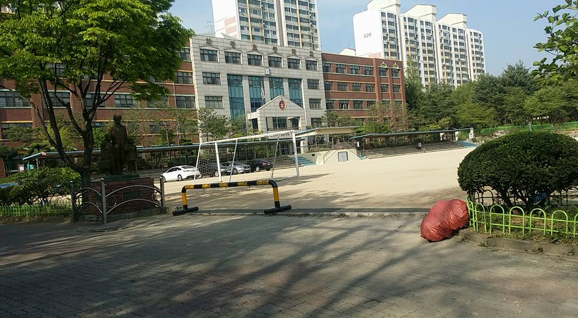
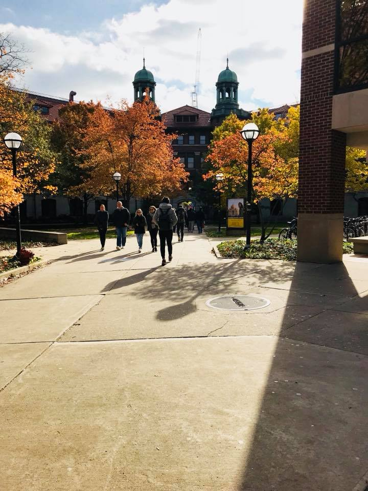
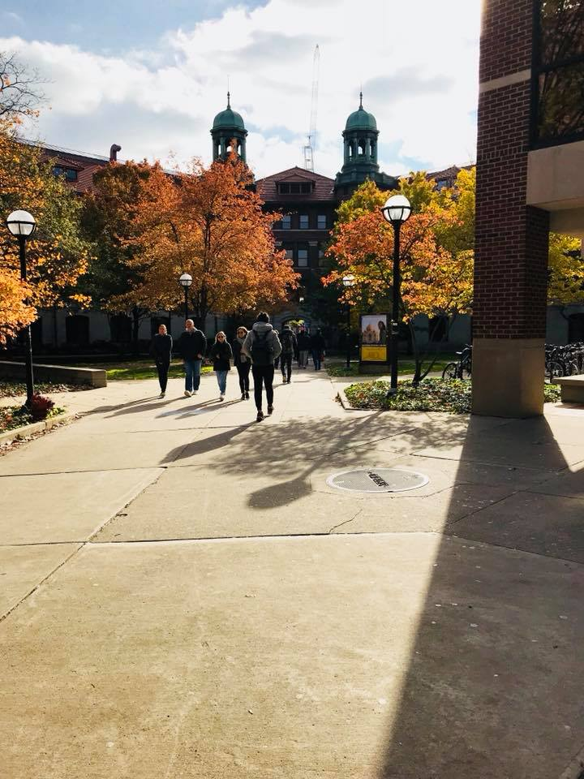

Pictures of Yokohama during winter and visiting Disney Sea in Tokyo with my friend before he leave Japan.


During World War II United built these fake ships on the island of Iwojim to make it seem like we had more force.


Pictures of my elementary school that I attended while growing up in Ilsan, South Korea and picture of the cementary where my grandpa is buried.
 


One of the most beautiful and awesome places in the United States and my soon to be alma mater the University of Michigan campus.
Go Blue!